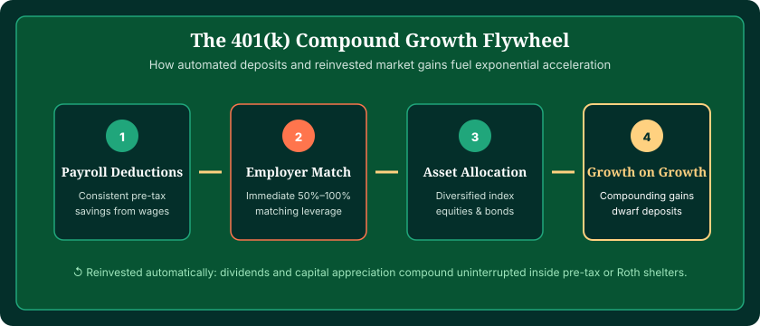
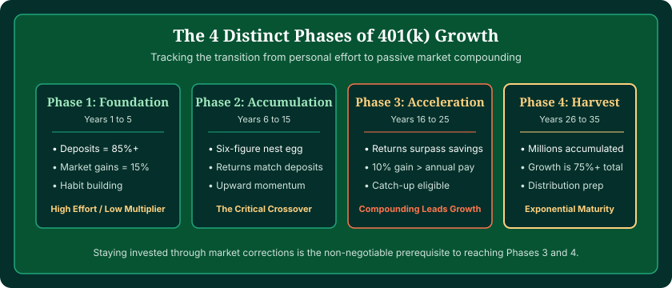

To understand 401(k) growth, you have to look past simple additions and understand the three distinct engines powering your balance: employee payroll contributions, employer matching funds, and reinvested compound investment returns. While your early years are driven almost entirely by your own deposits, compound returns take over as your balance scales. You can model this dynamic growth curve using our interactive 401(k) Calculator.
Many people imagine a 401(k) as a regular savings account that pays a modest interest dividend each month. In reality, a 401(k) is an institutional investment vehicle. Every paycheck, your contributions purchase units of index funds, mutual funds, or exchange-traded funds. Those funds hold shares in hundreds of profitable businesses and government debt instruments that generate profits, cash dividends, and rising share valuations.
This comprehensive guide examines how compound growth actually functions inside a 401(k), illustrates the pivotal "crossover point" where market growth outstrips personal savings, and demonstrates how small habit changes produce extraordinary retirement wealth.
Watch Your 401(k) Growth Curve in Action
See the exact year your investment earnings overtake your cash deposits. Test your numbers with our verified calculation engine.
Test Your Growth Timeline →The Three Engines of 401(k) Growth
Your account balance does not increase in a single, uniform way. It is pushed forward by three distinct forces that operate at different speeds across your career:
- Your Personal Elective Contributions: Automatic deductions taken directly from gross wages before payroll taxes are applied. This provides the primary foundation and liquidity during the first decade of your career.
- Employer Matching Contributions: Immediate additional funding added by your company. An employer match functions as an instant 50% to 100% risk-free return on your money that immediately begins compounding alongside your deposits.
- Compound Investment Returns: Dividends, interest payments, and capital appreciation generated by your portfolio assets. When dividends are paid, your plan custodian automatically uses those proceeds to purchase additional shares, ensuring the earnings immediately begin producing their own future earnings.

Does a 401(k) Earn "Interest"?
People often ask, "What interest rate does a 401(k) pay?" Strictly speaking, a 401(k) does not pay a set interest rate like a certificate of deposit (CD) or high-yield savings account.
Instead, your growth is driven by total investment return, which consists of:
- Capital Appreciation: When the stock market climbs, the price per share of your mutual funds increases. If you bought shares at $50 and they rise to $80, your net worth expands without you having to add cash.
- Dividend Payments: Companies in your index funds pay quarterly cash dividends out of their corporate profits. In a 401(k), these dividends are automatically reinvested to purchase more shares.
- Fixed-Income Yield: If your portfolio holds bond funds or stable-value instruments, they generate bond coupon payments that are also reinvested.
Because stock and bond markets fluctuate daily, your 401(k) will not show identical growth every quarter. Some years the S&P 500 may gain 24%, while other years it may decline 12%. Over multi-decade timelines, however, broad equity markets have historically compounded at an average annualized rate of roughly 9% to 10% nominal (around 7% after inflation).
The Tipping Point: When Growth Overtakes Contributions
The most exciting moment in retirement investing is reaching the crossover point.
During the first 5 to 7 years of contributing, looking at your quarterly statements can feel slow. If you deposit $6,000 per year and the market earns 7%, your first-year gain is only about $420. It feels like you are doing 95% of the heavy lifting.
However, as your balance crosses $100,000, $250,000, and $500,000, mathematics take over. At a $300,000 balance, an average 7% annual return produces $21,000 in market growth in a single year. If you are depositing $10,000 annually, the market is now generating more than double your annual savings effort!
| Timeline Stage | Account Balance | Annual Deposit (You + Match) | Annual 7% Market Gain | Who Does the Heavy Lifting? |
|---|---|---|---|---|
| Year 1 | $10,000 | $10,000 | $700 | Deposits account for 93% of growth |
| Year 5 | $61,500 | $10,000 | $4,300 | Deposits account for 70% of growth |
| Year 10 | $147,800 | $10,000 | $10,350 | The Crossover Point: Growth matches deposits |
| Year 15 | $268,900 | $10,000 | $18,800 | Investment growth is 1.9× larger than deposits |
| Year 20 | $438,700 | $10,000 | $30,700 | Investment growth is 3.1× larger than deposits |
| Year 25 | $677,000 | $10,000 | $47,400 | Investment growth is 4.7× larger than deposits |
| Year 30 | $1,010,700 | $10,000 | $70,700 | Investment growth is 7.1× larger than deposits |

How Employer Matching Accelerates the Compounding Flywheel
Employer matching acts as an immediate booster rocket to the compounding flywheel. When your employer deposits matching funds, you receive two massive advantages:
- Instant Zero-Risk Gain: A 50% match on a 6% contribution is an instantaneous 50% return on day one. No investment asset in the world offers a guaranteed 50% overnight yield.
- Compounding Leverage: That matching money is permanently invested in your selected funds. Over 25 to 30 years, an employer match of $3,000 per year compounds into roughly $280,000 in extra balance at a 7% return.
Failing to capture your full match is equivalent to turning down free compensation and slowing down your crossover point by 4 to 6 years. For detailed calculations on various matching formulas, see our guide on 401(k) calculators with employer match.

Why Market Volatility Actually Helps Long-Term 401(k) Growth
When the stock market drops 15% or 20%, it is natural to feel uneasy when opening your 401(k) statement. However, for active savers who have 10, 20, or 30 years until retirement, market downturns are actually a powerful wealth-building mechanism known as dollar-cost averaging.
Because your 401(k) deductions occur automatically every pay period, you invest the exact same dollar amount regardless of whether market prices are high or low:
- When the market is at all-time highs, your fixed contribution buys fewer fund shares.
- When the market drops during a correction or recession, your fixed contribution buys more fund shares at discounted prices.
When the economy eventually recovers and enters its next bull market, all of those extra shares accumulated at low prices surge in value. Savers who keep contributing systematically through downturns consistently accumulate significantly larger nest eggs than those who pause contributions or attempt to time the market.
The Impact of Annual Auto-Escalation
One of the most effective strategies to accelerate your 401(k) growth is auto-escalation—committing to increase your savings rate by 1% of your salary each year.
If you start by saving 6% of your $60,000 salary ($3,600/year) and increase it by 1% each year until you reach 15%, you barely notice the gradual change in your take-home pay, especially if timed alongside annual cost-of-living or merit raises. Over a 30-year horizon, auto-escalation can add $350,000 to $500,000 to your final retirement portfolio compared to leaving your savings rate flat at 6%. To learn more about picking your optimal contribution level, read our complete guide on how much to contribute to a 401(k).
Frequently Asked Questions
How does a 401(k) grow?
A 401(k) grows through three distinct channels: payroll contributions deducted from your wages, matching contributions contributed by your employer, and compound investment earnings (dividends, interest, and capital growth) produced by the mutual funds, index funds, or ETFs inside your account.
Does a 401(k) earn interest?
Not in the simple way a bank savings account earns interest. A 401(k) is an investment account holding equities, bonds, or money market funds. Its growth comes primarily from capital appreciation (share price growth) and reinvested dividends, though bond allocations do generate fixed-income interest.
What is the 'crossover point' in 401(k) growth?
The crossover point is the pivotal milestone in your retirement journey where annual compound investment gains exceed the total annual cash contributions you and your employer deposit. For most steady savers, this tipping point occurs between year 10 and year 15 of systematic investing.
How fast does a 401(k) grow in the first 10 years versus later years?
In the first 10 years, personal contributions account for roughly 65% to 75% of your total balance. However, by year 25 and 30, compound investment earnings account for more than 70% to 80% of your total portfolio, accelerating your net worth far faster than personal contributions can alone.
Can my 401(k) lose money during market downturns?
Yes, because the funds inside a 401(k) are invested in financial markets, account values fluctuate with stock and bond prices. However, market downturns also allow ongoing automatic payroll contributions to purchase fund shares at lower prices (dollar-cost averaging), which boosts long-term growth during subsequent market recoveries.
Does a 401(k) keep growing after you retire?
Yes. Even after you stop making payroll contributions and begin withdrawing funds in retirement, the remaining balance stays invested and continues compounding. If you withdraw 4% annually while your portfolio gains an average of 6%, your account balance can remain stable or even continue growing.